TERMINOS TECNICOS/TECHNICAL TERMS
Termino/Term
Español/Spanish
Ingles/English
Imagen/image
Cursores o Punteros
Un puntero es un objeto
del lenguaje de programación,
cuyo valor se refiere a otro
valor almacenado en otra
parte de la memoria del
ordenador utilizando su dirección.
A pointer is a programming
language object, whose value
refers to another value stored
elsewhere in the computer's
memory using its address.
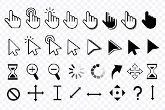
CPU
es el componente principal de
la computadora para el procesamiento
de instrucciones.
is the main component of the
computer for processing instructions.
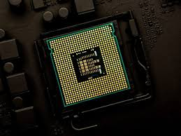
MEMORIA
Se almacenan temporalmente tanto
los datos como los programas que la
unidad central de procesamiento.
Both the data and the programs
that the central processing.
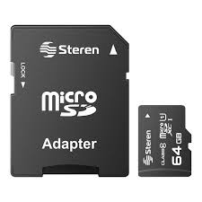
VIRUS
Es un tipo de programa o código
malicioso escrito para modificar el
funcionamiento de un equipo.
It is a type of malicious }
program or code written to modify
the operation of a computer.
ALGORITMO
Conjunto ordenado y finito de
operaciones que permite hallar la
solución de un problema.
Ordered and finite set of
operations that allows finding
the solution to a problem.
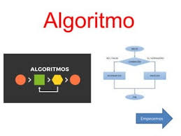
Procesador
El procesador es la mente de la PC
ejecuta todas las acciones que existen
is the brain of the system, it
processes everything that happens on
the PC and executes all the actions
that exist.
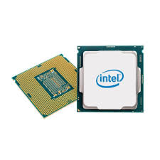
VIÑETAS
Sirven para dar énfasis al
texto y estas se ubican al inicio
del texto en forma de listas numeradas.
It serves to give emphasis to
the text and is located at the
beginning of the text in the form
of numbered lists.
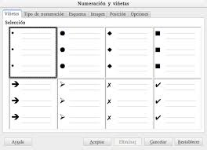
MENÚ
Serie de opciones que el
usuario puede elegir para realizar
determinadas tareas.
Series of options that
user can choose to perform
certain tasks.
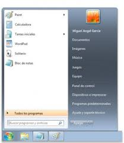
NUBE
Es el uso de una red de
servidores remotos conectados
a internet para almacenar,
administrar y procesar datos.
It is the use of a network
of remote servers connected to
the internet to store, manage
and process data.
USUARIO
Usuario de internet que
llega al sitio web móvil.
Internet user coming to
mobile website.
PUBLICAR
Diseñar las páginas web
de nuestro sitio web en el
disco duro del equipo para
luego enviarlos al servidor.
Desing the web pages of
our website om the computer’s
hard drive and then send them
to the server.
TABLAS
Objetos con bases de
datos que contienen todos
sus datos.
Objects with databases
containing all their data.
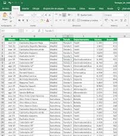
SERVIDOR
Es un Sistema que
proporciona recursos,
datos, servicios o programas
a otros ordenadores, conocidos
comoclientes, a través de una
red.
Is a system that provides
resources, data, services or
programs to other computers,
known as clients, over a
network.
TÉCNICO
Estudio que realiza un
área o entidad donde define
y emite concepto de acuerdo
a su competencia.
Study carried out by an
area or entity where it defines
and issues a concept according
to its competence.
SALIDA
En la interacción de ordenador
información producida por el programa
del ordenador y percibida por el
usuario.
In human computer interaction,
the output is the information
produced by the computer program
and perceived by the user.
Código QR
Son códigos de barras,
capaces de almacenar determinado
tipo de información, como una URL,
SMS, EMail, Texto, etc
They are barcodes, capable
of storing certain types of
information, such as a URL,
SMS, EMail, Texto, etc
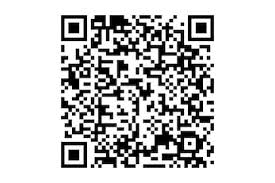
Tarjeta grafica
Una tarjeta gráfica o
tarjeta de video es una
tarjeta de expansión de la
placa base de la computadora
que se encarga de procesar los
datos provenientes del procesador
y transformarlos en información
comprensible y representable en
el dispositivo de salida.
A graphics card or video
card is an expansion card on the
computer's motherboard that is
responsible for processing the
data coming from the processor
and transforming it into
understandable and representable
information on the output device
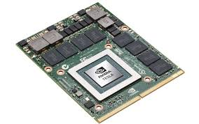
Sistema operativo
Operating system
es un programa o conjunto de
programas que en un sistema
operativo informático gestiona
los recursos hardware provee
servicios a los programas de
aplicación,
it is a program or set
of programs that in a computer
operating system manages the
hardware resources and provides
services to the application
programs.
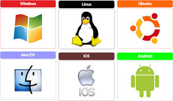
Software
Es un conjunto de reglas o
programas que dan instrucciones
a un ordenador para que realice
tareas específicas.
It is a set of rules or
programs that instruct a
computer to perform specific
tasks.
Programas
Es un conjunto de pasos
lógicos escritos en un lenguaje
de programación que nos permite
realizar una tarea específica.
It is a set of logical steps
written in a programming language
that allows us to perform a specific
task.

Diagramas
Los diagramas son representaciones
gráficas que utilizan símbolos, formas
y líneas para mostrar conceptos, procesos,
sistemas o relaciones. Sirven para
visualizar y comunicar información de
manera clara y estructurada,.
Diagrams are graphic representations
that use symbols, shapes, and lines to
depict concepts, processes, systems, or
relationships.
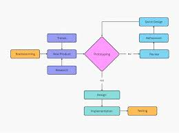
Protocolo
es un conjunto de reglas y estándares
que definen cómo se procesan y formatea la
información en una red. Permiten que los
dispositivos se comuniquen entre sí, incluso
si utilizan hardware y software diferentes.
t is a set of rules and standards that
define how information is processed and
formatted on a network. They allow devices
to communicate with each other, even if they
use different hardware and software.
Memoria RAm
es la memoria principal de un dispositivo,
esa donde se almacenan de forma temporal los
datos de los programas que estás utilizando
en este momento.
It is the main memory of a device, where
the data of the programs you are currently
using are temporarily stored.
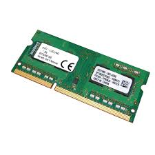
Vinculo
es un elemento de un documento electrónico
que hace referencia a otro recurso, por ejemplo,
a otro punto dentro del mismo o de otro
documento.
is an element of an electronic document that
refers to another resource, for example, to
another point within the same or another document.
| Termino/Term | Español/Spanish | Ingles/English | Imagen/image |
| Cursores o Punteros | Un puntero es un objeto del lenguaje de programación, cuyo valor se refiere a otro valor almacenado en otra parte de la memoria del ordenador utilizando su dirección. | A pointer is a programming language object, whose value refers to another value stored elsewhere in the computer's memory using its address. | 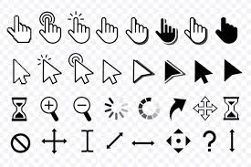 |
| CPU | es el componente principal de la computadora para el procesamiento de instrucciones. | is the main component of the computer for processing instructions. | 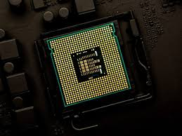 |
| MEMORIA | Se almacenan temporalmente tanto los datos como los programas que la unidad central de procesamiento. | Both the data and the programs that the central processing. | 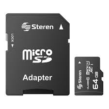 | VIRUS | Es un tipo de programa o código malicioso escrito para modificar el funcionamiento de un equipo. | It is a type of malicious } program or code written to modify the operation of a computer. |
| ALGORITMO | Conjunto ordenado y finito de operaciones que permite hallar la solución de un problema. | Ordered and finite set of operations that allows finding the solution to a problem. | 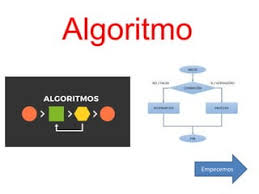 |
| Procesador | El procesador es la mente de la PC ejecuta todas las acciones que existen | is the brain of the system, it processes everything that happens on the PC and executes all the actions that exist. | 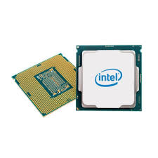 |
| VIÑETAS | Sirven para dar énfasis al texto y estas se ubican al inicio del texto en forma de listas numeradas. | It serves to give emphasis to the text and is located at the beginning of the text in the form of numbered lists. | 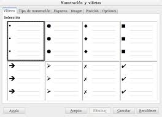 |
| MENÚ | Serie de opciones que el usuario puede elegir para realizar determinadas tareas. | Series of options that user can choose to perform certain tasks. | 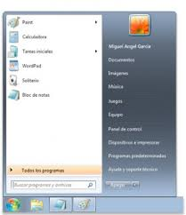 |
| NUBE | Es el uso de una red de servidores remotos conectados a internet para almacenar, administrar y procesar datos. | It is the use of a network of remote servers connected to the internet to store, manage and process data. | |
| USUARIO | Usuario de internet que llega al sitio web móvil. | Internet user coming to mobile website. | |
| PUBLICAR | Diseñar las páginas web de nuestro sitio web en el disco duro del equipo para luego enviarlos al servidor. | Desing the web pages of our website om the computer’s hard drive and then send them to the server. | |
| TABLAS | Objetos con bases de datos que contienen todos sus datos. | Objects with databases containing all their data. | 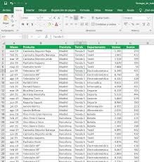 |
| SERVIDOR | Es un Sistema que proporciona recursos, datos, servicios o programas a otros ordenadores, conocidos comoclientes, a través de una red. | Is a system that provides resources, data, services or programs to other computers, known as clients, over a network. | |
| TÉCNICO | Estudio que realiza un área o entidad donde define y emite concepto de acuerdo a su competencia. | Study carried out by an area or entity where it defines and issues a concept according to its competence. | |
| SALIDA | En la interacción de ordenador información producida por el programa del ordenador y percibida por el usuario. | In human computer interaction, the output is the information produced by the computer program and perceived by the user. | |
| Código QR | Son códigos de barras, capaces de almacenar determinado tipo de información, como una URL, SMS, EMail, Texto, etc | They are barcodes, capable of storing certain types of information, such as a URL, SMS, EMail, Texto, etc | 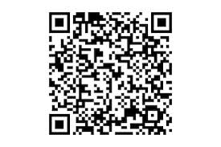 |
| Tarjeta grafica | Una tarjeta gráfica o tarjeta de video es una tarjeta de expansión de la placa base de la computadora que se encarga de procesar los datos provenientes del procesador y transformarlos en información comprensible y representable en el dispositivo de salida. | A graphics card or video card is an expansion card on the computer's motherboard that is responsible for processing the data coming from the processor and transforming it into understandable and representable information on the output device | 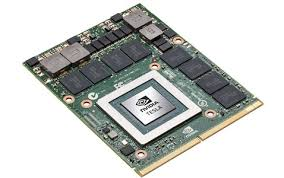 |
| Sistema operativo Operating system | es un programa o conjunto de programas que en un sistema operativo informático gestiona los recursos hardware provee servicios a los programas de aplicación, | it is a program or set of programs that in a computer operating system manages the hardware resources and provides services to the application programs. | 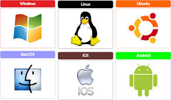 |
| Software | Es un conjunto de reglas o programas que dan instrucciones a un ordenador para que realice tareas específicas. | It is a set of rules or programs that instruct a computer to perform specific tasks. | |
| Programas | Es un conjunto de pasos lógicos escritos en un lenguaje de programación que nos permite realizar una tarea específica. | It is a set of logical steps written in a programming language that allows us to perform a specific task. | |
| Diagramas | Los diagramas son representaciones gráficas que utilizan símbolos, formas y líneas para mostrar conceptos, procesos, sistemas o relaciones. Sirven para visualizar y comunicar información de manera clara y estructurada,. | Diagrams are graphic representations that use symbols, shapes, and lines to depict concepts, processes, systems, or relationships. | 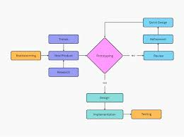 |
| Protocolo | es un conjunto de reglas y estándares que definen cómo se procesan y formatea la información en una red. Permiten que los dispositivos se comuniquen entre sí, incluso si utilizan hardware y software diferentes. | t is a set of rules and standards that define how information is processed and formatted on a network. They allow devices to communicate with each other, even if they use different hardware and software. | |
| Memoria RAm | es la memoria principal de un dispositivo, esa donde se almacenan de forma temporal los datos de los programas que estás utilizando en este momento. | It is the main memory of a device, where the data of the programs you are currently using are temporarily stored. | 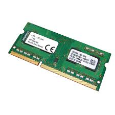 |
| Vinculo | es un elemento de un documento electrónico que hace referencia a otro recurso, por ejemplo, a otro punto dentro del mismo o de otro documento. | is an element of an electronic document that refers to another resource, for example, to another point within the same or another document. |